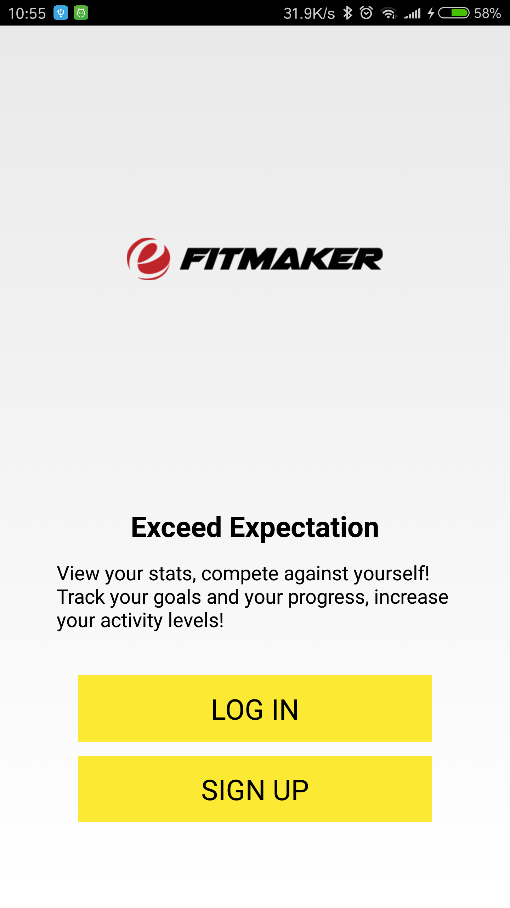
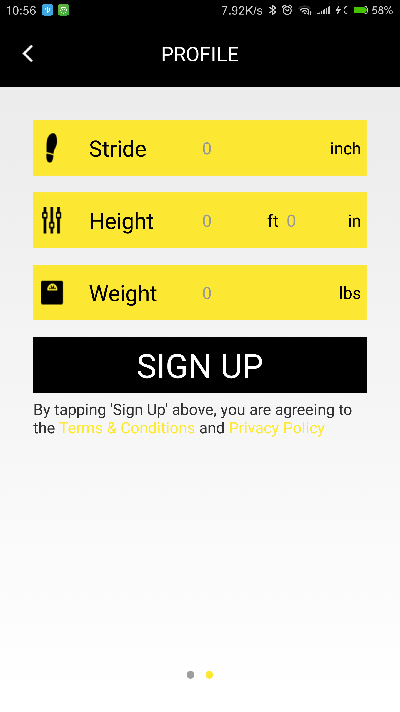
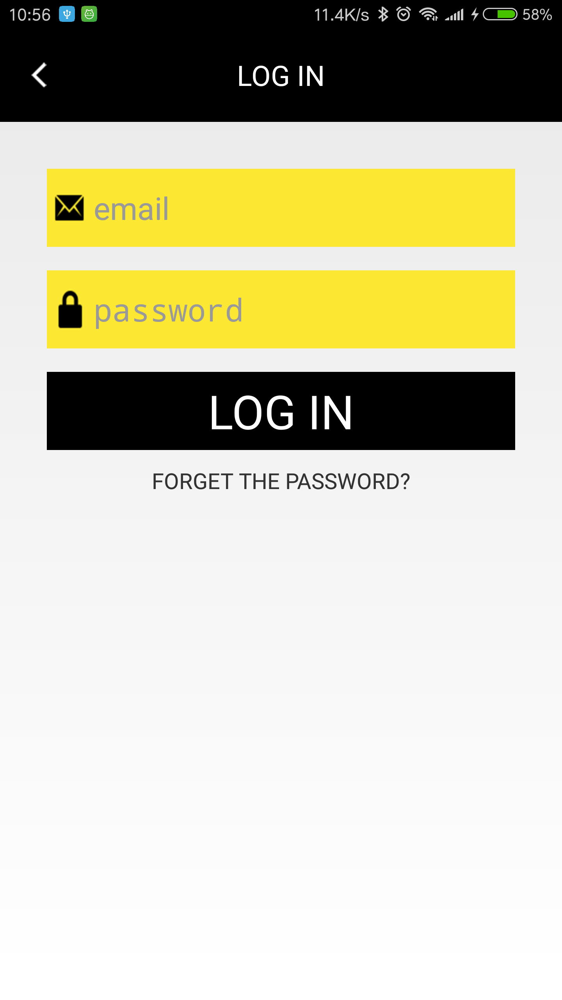
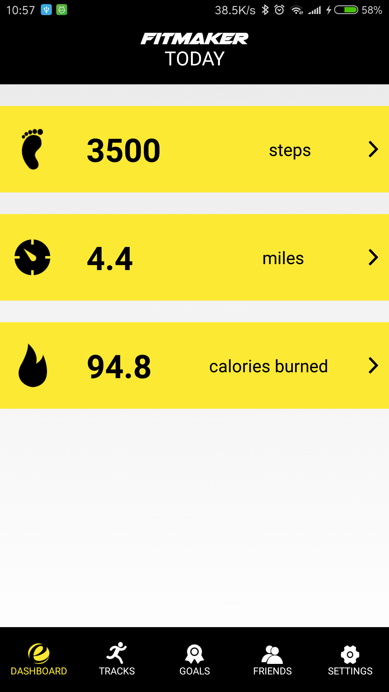
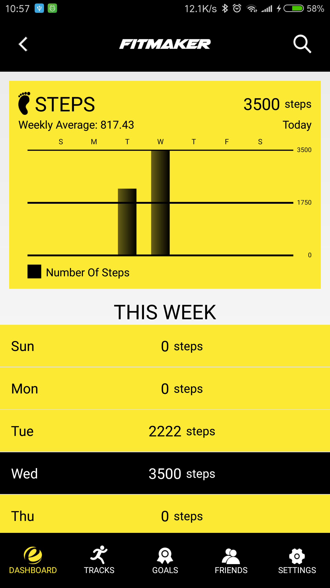
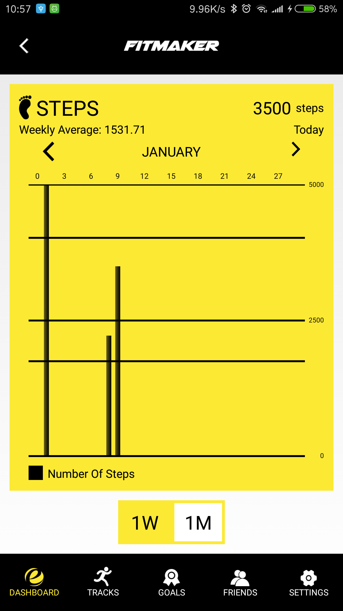
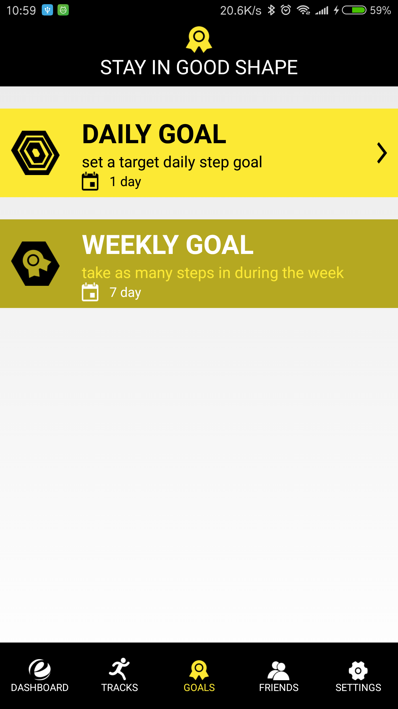
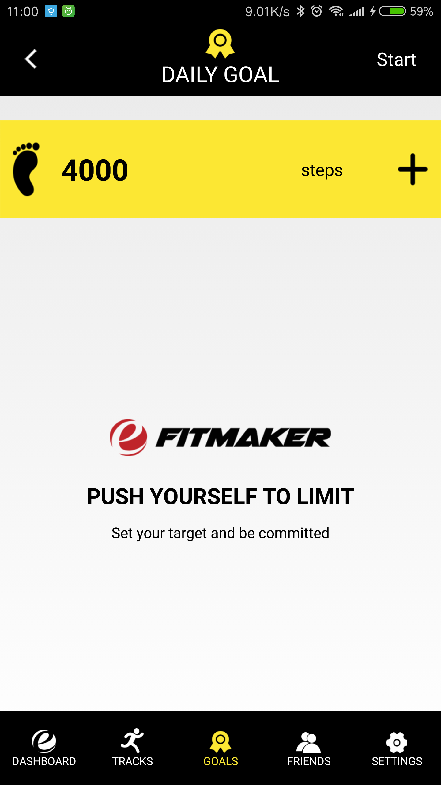
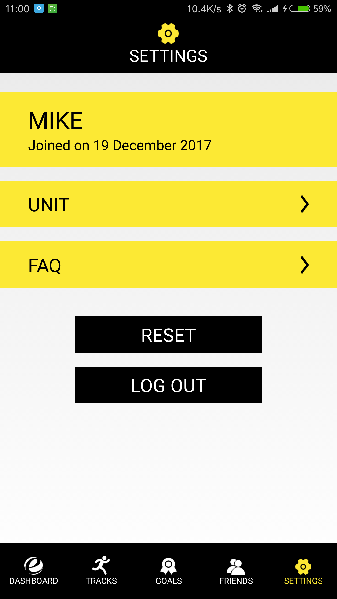
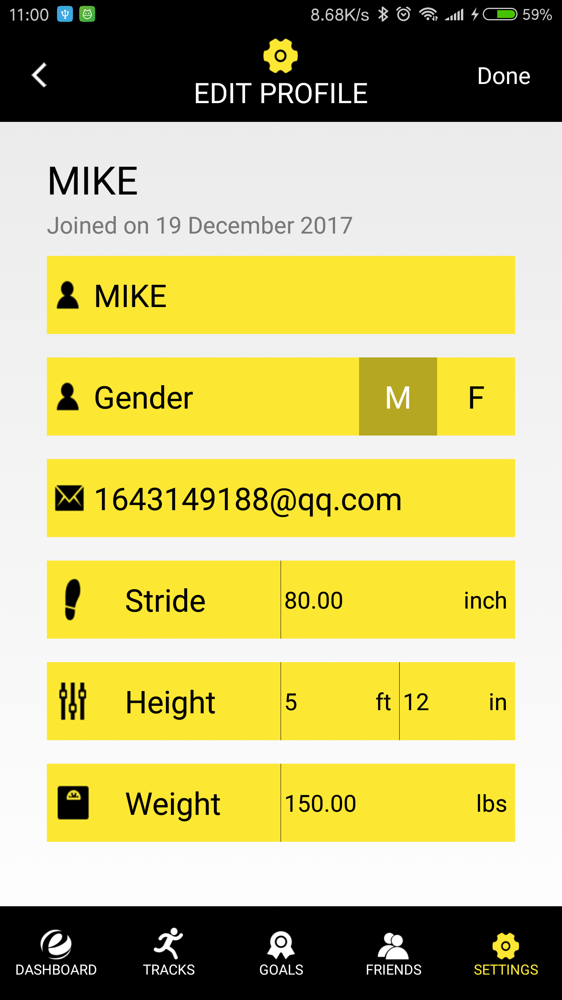

Welcome to Accelerate Activity Tracker! This is the FAQ page. If you have any question, please feel free to refer to this page. We'll help you walk through the whole application!
1. Member Signup, Logon / Logout, Forgot Password

First of all you have reached our first page, the home page. You can either signup or log on with your account. Let's sign up now!

You can fill in your personal information here, all fields are compulsory. In particular you can enter your Stride, Height and Weight. We will calculate your calories consumed with these information. After you press "Signup" button, we will send you a confirmation email. You should check your mailbox to confirm your account registration.

After you have registered your account, you can log on with your new account id and password.
2. Dashboard

And you will arrive the Dashboard page. You can check your steps, distance & calories here. If it's your first time to check your dashboard, your steps, distance & calories will be 0. When you press on "Steps", you can check statistical records in the past week.

And you can even press on a day to check your past records. You past records will be stored for 14 months at most.

You can check your past week, 2 weeks, 3 weeks & 4 weeks records here.
3. Tracks
You can track your steps in the "Tracks" page. You can enter the steps here and the distance and calories will be automatically calculated.
4. Goals
You can check your daily goal and weekly goal here. Daily goal is the target you want to meet on the day. Weekly goal can be achieved if you can meet 7 daily goals consecutively.

If you can meet the goal, you can receive a badge for your goal.

You can set your daily goal in steps.
5. Friends
You can check your friends' steps in the "Friends" page.
6. Settings

You can check your profile in the "Profile" page.

You can edit your profile in the "Edit Profile" page.
You can edit your unit setting in the "Unit Setting" page.